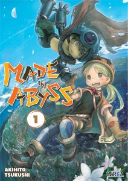

-
GTO (Great Teacher Onizuka)
This manga by Tohru Fujisawa was published in the well-known Shonen Magazine, from the Kodansha
publishing house. In Spain, it was partially published by Mangaline Ediciones, but it could not be
completed due to various problems that sadly ended with the publisher. The story of this young
22-year-old delinquent who, with nothing else to do in life, decides to become a high school
teacher, surprised by its freshness, originality, humor and, above all, by the teachings that were
basically dropped of his misadventures.
-
Made in Abyss
This popular and tragic work by Tsukushi Akihito, published in our country by Ivrea, was one of the
surprises in the world and, as a result of its wonderful anime, it began to increase in popularity
until it became not only one of the best-selling manga in its country of origin, but also one of the
most beloved. Despite its hardness, its interesting and mysterious plot, its fascinating abysmal
world and how well the story is carried out make it one of the works of the moment on its own
merits.

-
Monogatari Series
NisioIsin's work was already enormously popular in Japan, its author being one of the best-selling
light novels. Later, with the anime, she also captivated those who did not know her, who fell in
love with her characters, her stories and her unique humor. As if this were not enough, then a manga
adaptation (published in Spain by Milky Way) was announced by the incredible Ogure Ito, who knows
how to capture in its pages the peculiar world that surrounds this work.
-
20th Century Boys
Everything that can be said at this point about Naoki Urasawa, the master of thriller manga, is
already redundant. It is not surprising that we find this work on this list, since it is one of the
most fascinating, addictive and well-run by the author. It is incredible how the mangaka knows how
to combine the past, present and even the future without leaving any loose ends and astonishing the
reader at every step he takes. In Spain, we currently have a wonderful kanzenban edition by Planeta.
-
Solo Leveling
Possibly the most unknown work on the list. It is a manhwa (Korean manga) that is quite popular in
the world. Despite the fact that the plot is already more than hackneyed (a loser protagonist who
must become a hero), this work has captivated the public thanks to the charisma of its characters,
its addictive entertainment factor and, above all, its incredible artistic style. It is the work of
authors Jang, Sung Rak and Chugong.
-
Slam Dunk
One of the most iconic and remembered works in history and one of the fundamental pillars of the
popular Shonen Jump in its day. The story of the badass Sakuragi, who goes through everything until
the sport crosses his life, captivated everyone, lovers of spokon or not. This work of
self-improvement, sacrifice and teamwork embodies the values of a good manga like few others, as
well as entertaining and teaching like no other. Kanzenban edition available in Spain, from Ivrea.
-
Grand Blue
One of the most modern works on the list, whose success was completely unexpected. Make no mistake,
it is not a work for everyone. His humor is based on the most hyperbolic exaggeration, alcoholic
jokes and fanservice galore. But perhaps these factors make it such a beloved series. Of course, it
works great as light entertainment to have a few laughs, and if we add some learning about the world
of scuba diving, we have a product whose success may not be so surprising. In Spain, it is licensed
by Planeta Cómic.
-
Kingdom
This manga by Hara Yasuhisa is one of the longest-running historical works in existence. It tells
us, time and time, the history of the Chinese dynasty, with all its wars, important people,
outstanding events and, above all, a very sincere brutality when it comes to reflecting the troubles
of the battlefield. As soon as the subject catches your attention, you will be before a more than
interesting work whose pages fly.
-
Goodnight Punpun
Probably the hardest and most heartbreaking work of Inio Asano, and this is saying a lot, since he
usually permeates his narrative with decadence, melancholy and longing for a bygone time that was
always better. Published in Spain by Norma Editorial, it is undoubtedly a work that will touch
everyone who reads it.

-
Vagabond
Double for Takehiko Inoue on this list. On this occasion, he turns to the historical genre to
masterfully tell us the story of the well-known samurai Mushashi Miyamoto since his youth, without
skimping on details, violence and a fast and dynamic narrative that hooks the reader from the first
moment. An essential work from which you cannot take your eyes off. Ivrea was in charge of bringing
her to Spain.
-
One Piece
The best-selling and most popular work of all time (with permission in certain aspects of Kimetsu No
Yaiba ). It was inevitable that he was on this list, since what Eiichiro Oda has achieved with his
manga transcends otaku culture to enter the mass media and world popular culture on its own merits.
A work charged with emotion, imagination and creativity that is impossible not to adore. The Straw
Hat band has been able to settle forever in our hearts. Its publication is carried out by Planeta
Cómic.
-
Monster
Inuoe is not the only doublet speaker on this list. Urasawa too, and with one of his most
international and beloved works worldwide, Monster. The story of doctor Kenzo Tenma, who must choose
between saving the life of a child and the powerful mayor, has also transcended manga culture and,
on more than one occasion, its adaptation to a film in Hollywood has been hinted at. We'll see if
the day finally comes... Available in kanzenban edition in Spain by Planeta.
-
Fullmetal Alchemist
The work that raised Hiromu Arakawa to fame and, possibly, to the history of manga. The
unforgettable trip of the Elric brothers made us all fall in love, and we immediately connected with
their circumstances and accompanied them on this exciting adventure that combines drama, humor and
action like few others with moments to remember that will remain forever in everyone's memory. . In
Spain, Norma has also published a kanzenban edition of this work.
-
Jojo's Bizarre Adventure
We thought that we would never see this demanded work in Spain, but thanks to the risk that Ivrea
took (which luckily turned out well) we can enjoy one of the most bizarre, fun and original stories
in the world of manga. The Jojos have come to stay in the popular collective, although in reality...
they have always been there.
-
Berserk
We close the list of the 15 best manga in history with the cursed work, which seems to jinx every
publisher that publishes it. However, there continues this story by Kentaro Miura who, at his slow
pace, continues to build an excellent fantastic epic narrative. Perhaps that is why publishers do
not stop betting on it despite everything that surrounds it and its exasperating rate of
publication. Currently, Panini Manga is in charge of its publication, alternating between its new
Maximum edition and the new regular volumes that are being released in Japan.